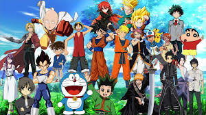

Anime
In Anime's Media Mix, Marc Steinberg convincingly shows that anime is far more than a style of Japanese animation. Beyond its immediate form of cartooning, anime is also a unique mode of cultural production and consumption that led to the phenomenon that is today called "media mix" in Japan and "convergence" in the West.According to Steinberg, both anime and the media mix were ignited on January 1, 1963, when Astro Boy hit Japanese TV screens for the first time. Sponsored by a chocolate manufacturer with savvy marketing skills, Astro Boy quickly became a cultural icon in Japan. He was the poster boy (or, in his case, "sticker boy") both for Meiji Seika's chocolates and for what could happen when a goggle-eyed cartoon child fell into the eager clutches of creative marketers. I...

Netflix
Anime | Netflix Official Site
Steinberg traces the cultural genealogy that spawned Astro Boy to the transformations of Japanese media culture that followed--and forward to the even more profound developments in global capitalism supported by the circulation of characters like Doraemon, Hello Kitty, and Suzumiya Haruhi. He details how convergence was sparked by anime, with its astoundingly broad merchandising of images and its franchising across media and commodities.
Nom
One Piece
Eiichiro Oda began his manga career at the age of 17, when his one-shot cowboy manga Wanted! won second place in the coveted Tezuka manga awards. Oda went on to work as an assistant to some of the biggest manga artists in the industry, including Nobuhiro Watsuki, before winning the Hop Step Award for new artists. His pirate adventure One Piece, which debuted in Weekly Shonen Jump magazine in 1997, quickly became one of the most popular manga in Japan.